Auxiliar 7: Conductores y Ecuación de Laplace
Solución de la ecuación de Laplace en coordenadas esféricas, esfera conductora en campo uniforme, e introducción a condensadores y capacitancia.
Temas que cubre
- Solución general de Laplace en coordenadas esféricas con polinomios de Legendre
- Esfera conductora puesta en un campo eléctrico uniforme externo $\mathbf{E}_0$
- Capacitancia: $C = Q/\Delta V$ y su cálculo para geometrías simples
- Energía almacenada en un condensador
- Condensadores en serie y paralelo
Conceptos clave
Laplace en esfera
Con simetría azimutal, la solución general es $V = \sum_\ell (A_\ell r^\ell + B_\ell r^{-(\ell+1)}) P_\ell(\cos\theta)$. Los coeficientes se fijan con las condiciones de borde.
Esfera en campo uniforme
El campo uniforme impone $V \to -E_0 r\cos\theta$ lejos. La esfera (a $V=0$) distorsiona el campo: la solución combina el campo uniforme con un dipolo inducido.
Capacitancia
Mide cuánta carga puede acumular un sistema por unidad de voltaje. Depende solo de la geometría, no de $Q$ ni $V$ individualmente. Unidad: Farad [F] = C/V.
Energía del condensador
La energía almacenada en el campo eléctrico es $U = \frac{1}{2}CV^2 = Q^2/(2C)$. Esta energía es la que se libera al descargar el condensador.
Fórmulas fundamentales




Qué hay que entender
- Identifica la simetría (esférica, cilíndrica, planar) para elegir coordenadas.
- Escribe la solución general con coeficientes indeterminados.
- Aplica condición lejana: el potencial debe coincidir con el campo externo para $r\to\infty$.
- Aplica condición de borde en el conductor ($V = V_0$) para determinar los coeficientes restantes.